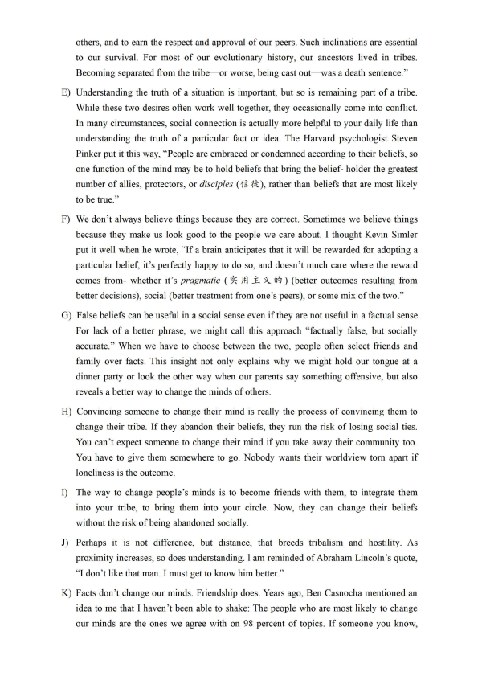
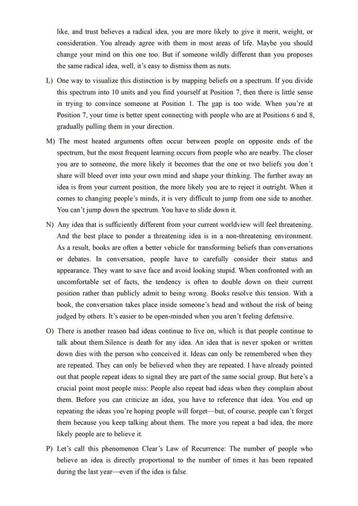
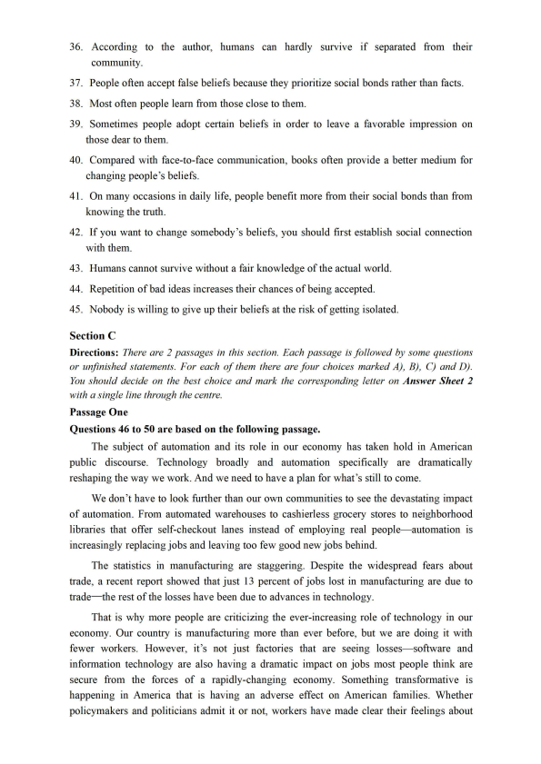
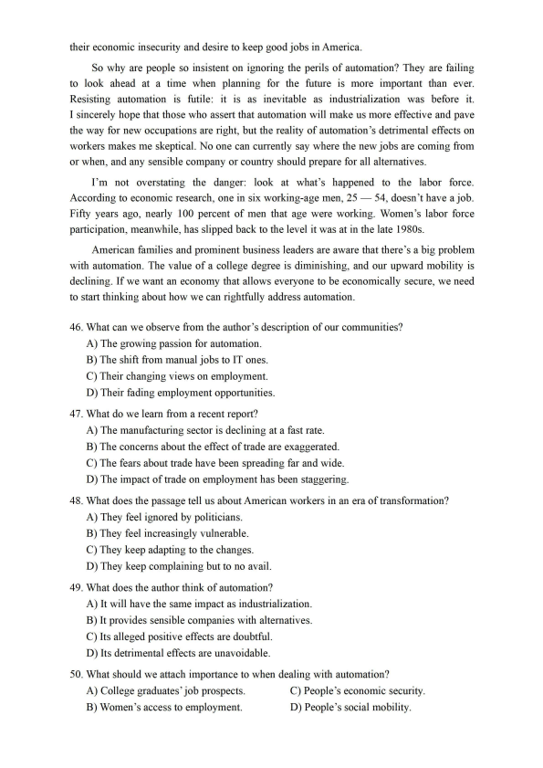
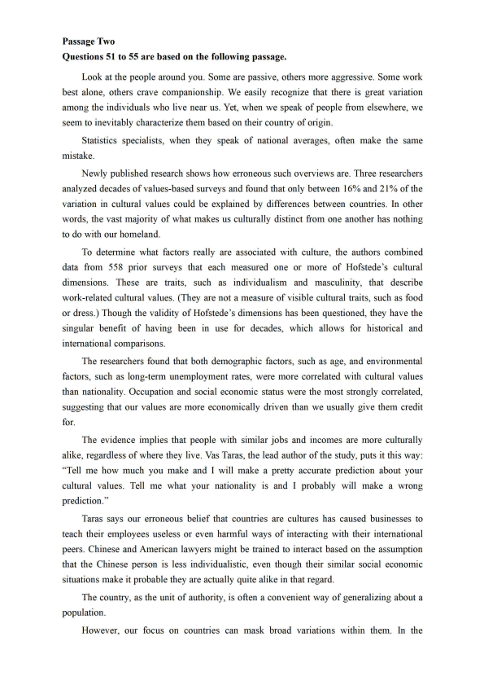
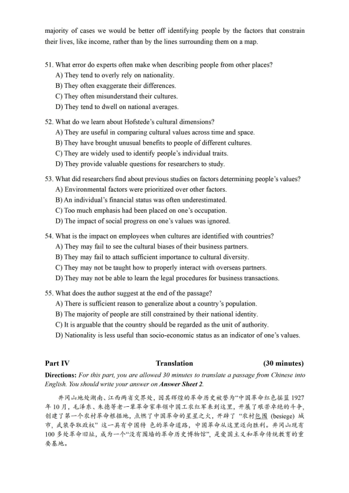

第 1 / 7 页

Part I
Writing
(30 minutes)
Directions: For this part, you are allowed 30 minutes to write an essay related to the short
passage given below. In your essay, you are to comment on the phenomenon described in the
passage and suggest measures to address the issue. You should write at least 150 words but no
more than 200 words.
Some parents in China are overprotective of their children. They plan everything for their
children, make all the decisions for them, and do not allow them to explore on their own in case
they make mistakes or get hurt.
Part II
Listening Comprehension
(30 minutes)
Part III
Reading Comprehension
(40 minutes)
Section A
Section B
Directions: In this section, you are going to read a passage with ten statements attached to it.
Each statement contains information given in one of the paragraphs. Identify the paragraph
from which the information is derived. You may choose a paragraph more than once. Each
paragraph is marked with a letter. Answer the questions by marking the corresponding letter on
Answer sheet 2.
Why facts don't change our minds
A) The economist J. K. Galbraith once wrote, "Faced with a choice between changing
one's mind and proving there is no need to do so, almost everyone gets busy with the
proof."
B) Leo Tolstoy was even bolder: "The most difficult subjects can be explained to the most
slow-witted man if he has not formed any idea of them already;
but the simplest thing
cannot be made clear to the most intelligent man if he is firmly persuaded that he knows
already, without a shadow of a doubt, what is laid before him."
C) What's going on here? Why don't facts change our minds? And why would someone
continue to believe a false or inaccurate idea anyway? How do such behaviors serve us?
Humans need a reasonably accurate view of the world in order to survive. If your model
of reality is wildly different from the actual world, then you struggle to take effective
actions each day. However, truth and accuracy are not the only things that matter to the
human mind. Humans also seem to have a deep desire to belong.
D) In Atomic Habits, I wrote, "Humans are herd animals. We want to fit in, to bond with
历年全国六级每次考2套听力，第3套与第2套听力相同，只有题目选项顺序不同，因此不再展示。
本次六级考了2套阅读词汇理解，本套与第2套完全相同，不再重复出现。
查看 / 复制本页文字
Part I Writing (30 minutes) Directions: For this part, you are allowed 30 minutes to write an essay related to the short passage given below. In your essay, you are to comment on the phenomenon described in the passage and suggest measures to address the issue. You should write at least 150 words but no more than 200 words. Some parents in China are overprotective of their children. They plan everything for their children, make all the decisions for them, and do not allow them to explore on their own in case they make mistakes or get hurt. Part II Listening Comprehension (30 minutes) Part III Reading Comprehension (40 minutes) Section A Section B Directions: In this section, you are going to read a passage with ten statements attached to it. Each statement contains information given in one of the paragraphs. Identify the paragraph from which the information is derived. You may choose a paragraph more than once. Each paragraph is marked with a letter. Answer the questions by marking the corresponding letter on Answer sheet 2. Why facts don't change our minds A) The economist J. K. Galbraith once wrote, "Faced with a choice between changing one's mind and proving there is no need to do so, almost everyone gets busy with the proof." B) Leo Tolstoy was even bolder: "The most difficult subjects can be explained to the most slow-witted man if he has not formed any idea of them already; but the simplest thing cannot be made clear to the most intelligent man if he is firmly persuaded that he knows already, without a shadow of a doubt, what is laid before him." C) What's going on here? Why don't facts change our minds? And why would someone continue to believe a false or inaccurate idea anyway? How do such behaviors serve us? Humans need a reasonably accurate view of the world in order to survive. If your model of reality is wildly different from the actual world, then you struggle to take effective actions each day. However, truth and accuracy are not the only things that matter to the human mind. Humans also seem to have a deep desire to belong. D) In Atomic Habits, I wrote, "Humans are herd animals. We want to fit in, to bond with 历年全国六级每次考2套听力，第3套与第2套听力相同，只有题目选项顺序不同，因此不再展示。 本次六级考了2套阅读词汇理解，本套与第2套完全相同，不再重复出现。
第 2 / 7 页

others, and to earn the respect and approval of our peers. Such inclinations are essential
to our survival. For most of our evolutionary history, our ancestors lived in tribes.
Becoming separated from the tribe-or worse, being cast out-was a death sentence."
E) Understanding the truth of a situation is important, but so is remaining part of a tribe.
While these two desires often work well together, they occasionally come into conflict.
In many circumstances, social connection is actually more helpful to your daily life than
understanding the truth of a particular fact or idea. The Harvard psychologist Steven
Pinker put it this way, "People are embraced or condemned according to their beliefs, so
one function of the mind may be to hold beliefs that bring the belief- holder the greatest
number of allies, protectors, or disciples ( 1-t ,f:,l ), rather than beliefs that are most likely
to be true."
F) We don't always believe things because they are correct. Sometimes we believe things
because they make us look good to the people we care about. I thought Kevin Simler
put it well when he wrote, "If a brain anticipates that it will be rewarded for adopting a
particular belief, it's perfectly happy to do so, and doesn't much care where the reward
comes from- whether it's pragmatic ( ~ ffl _i.-;{_ a-~) (better outcomes resulting from
better decisions), social (better treatment from one's peers), or some mix of the two."
G) False beliefs can be useful in a social sense even if they are not useful in a factual sense.
For lack of a better phrase, we might call this approach "factually false, but socially
accurate." When we have to choose between the two, people often select friends and
family over facts. This insight not only explains why we might hold our tongue at a
dinner party or look the other way when our parents say something offensive, but also
reveals a better way to change the minds of others.
H) Convincing someone to change their mind is really the process of convincing them to
change their tribe. If they abandon their beliefs, they run the risk of losing social ties.
You can't expect someone to change their mind if you take away their community too.
You have to give them somewhere to go. Nobody wants their worldview tom apart if
loneliness is the outcome.
I) The way to change people's minds is to become friends with them, to integrate them
into your tribe, to bring them into your circle. Now, they can change their beliefs
without the risk of being abandoned socially.
J) Perhaps it is not difference, but distance, that breeds tribalism and hostility. As
proximity increases, so does understanding. lam reminded of Abraham Lincoln's quote,
"I don't like that man. I must get to know him better."
K) Facts don't change our minds. Friendship does. Years ago, Ben Casnocha mentioned an
idea to me that I haven't been able to shake: The people who are most likely to change
our minds are the ones we agree with on 98 percent of topics. If someone you know,
查看 / 复制本页文字
others, and to earn the respect and approval of our peers. Such inclinations are essential
to our survival. For most of our evolutionary history, our ancestors lived in tribes.
Becoming separated from the tribe-or worse, being cast out-was a death sentence."
E) Understanding the truth of a situation is important, but so is remaining part of a tribe.
While these two desires often work well together, they occasionally come into conflict.
In many circumstances, social connection is actually more helpful to your daily life than
understanding the truth of a particular fact or idea. The Harvard psychologist Steven
Pinker put it this way, "People are embraced or condemned according to their beliefs, so
one function of the mind may be to hold beliefs that bring the belief- holder the greatest
number of allies, protectors, or disciples ( 1-t ,f:,l ), rather than beliefs that are most likely
to be true."
F) We don't always believe things because they are correct. Sometimes we believe things
because they make us look good to the people we care about. I thought Kevin Simler
put it well when he wrote, "If a brain anticipates that it will be rewarded for adopting a
particular belief, it's perfectly happy to do so, and doesn't much care where the reward
comes from- whether it's pragmatic ( ~ ffl _i.-;{_ a-~) (better outcomes resulting from
better decisions), social (better treatment from one's peers), or some mix of the two."
G) False beliefs can be useful in a social sense even if they are not useful in a factual sense.
For lack of a better phrase, we might call this approach "factually false, but socially
accurate." When we have to choose between the two, people often select friends and
family over facts. This insight not only explains why we might hold our tongue at a
dinner party or look the other way when our parents say something offensive, but also
reveals a better way to change the minds of others.
H) Convincing someone to change their mind is really the process of convincing them to
change their tribe. If they abandon their beliefs, they run the risk of losing social ties.
You can't expect someone to change their mind if you take away their community too.
You have to give them somewhere to go. Nobody wants their worldview tom apart if
loneliness is the outcome.
I) The way to change people's minds is to become friends with them, to integrate them
into your tribe, to bring them into your circle. Now, they can change their beliefs
without the risk of being abandoned socially.
J) Perhaps it is not difference, but distance, that breeds tribalism and hostility. As
proximity increases, so does understanding. lam reminded of Abraham Lincoln's quote,
"I don't like that man. I must get to know him better."
K) Facts don't change our minds. Friendship does. Years ago, Ben Casnocha mentioned an
idea to me that I haven't been able to shake: The people who are most likely to change
our minds are the ones we agree with on 98 percent of topics. If someone you know,
第 3 / 7 页

like, and trust believes a radical idea, you are more likely to give it merit, weight, or
consideration. You already agree with them in most areas of life. Maybe you should
change your mind on this one too. But if someone wildly different than you proposes
the same radical idea, well, it's easy to dismiss them as nuts.
L) One way to visualize this distinction is by mapping beliefs on a spectrum. If you divide
this spectrum into I O units and you find yourself at Position 7, then there is little sense
in trying to convince someone at Position 1. The gap is too wide. When you're at
Position 7, your time is better spent connecting with people who are at Positions 6 and 8,
gradually pulling them in your direction.
M) The most heated arguments often occur between people on opposite ends of the
spectrum, but the most frequent learning occurs from people who are nearby. The closer
you are to someone, the more likely it becomes that the one or two beliefs you don't
share will bleed over into your own mind and shape your thinking. The further away an
idea is from your current position, the more likely you are to reject it outright. When it
comes to changing people's minds, it is very difficult to jump from one side to another.
You can't jump down the spectrum. You have to slide down it.
N) Any idea that is sufficiently different from your current worldview will feel threatening.
And the best place to ponder a threatening idea is in a non-threatening environment.
As a result, books are often a better vehicle for transforming beliefs than conversations
or debates. In conversation, people have to carefully consider their status and
appearance. They want to save face and avoid looking stupid. When confronted with an
uncomfortable set of facts, the tendency is often to double down on their current
position rather than publicly admit to being wrong. Books resolve this tension. With a
book, the conversation takes place inside someone's head and without the risk of being
judged by others. It's easier to be open-minded when you aren't feeling defensive.
0) There is another reason bad ideas continue to live on, which is that people continue to
talk about them.Silence is death for any idea. An idea that is never spoken or written
down dies with the person who conceived it. Ideas can only be remembered when they
are repeated. They can only be believed when they are repeated. I have already pointed
out that people repeat ideas to signal they are part of the same social group. But here's a
crucial point most people miss: People also repeat bad ideas when they complain about
them. Before you can criticize an idea, you have to reference that idea. You end up
repeating the ideas you're hoping people will forget- but, of course, people can't forget
them because you keep talking about them. The more you repeat a bad idea, the more
likely people are to believe it.
P) Let's call this phenomenon Clear 's Law of Recurrence: The number of people who
believe an idea is directly proportional to the number of times it has been repeated
during the last year- even if the idea is false.
查看 / 复制本页文字
like, and trust believes a radical idea, you are more likely to give it merit, weight, or consideration. You already agree with them in most areas of life. Maybe you should change your mind on this one too. But if someone wildly different than you proposes the same radical idea, well, it's easy to dismiss them as nuts. L) One way to visualize this distinction is by mapping beliefs on a spectrum. If you divide this spectrum into I O units and you find yourself at Position 7, then there is little sense in trying to convince someone at Position 1. The gap is too wide. When you're at Position 7, your time is better spent connecting with people who are at Positions 6 and 8, gradually pulling them in your direction. M) The most heated arguments often occur between people on opposite ends of the spectrum, but the most frequent learning occurs from people who are nearby. The closer you are to someone, the more likely it becomes that the one or two beliefs you don't share will bleed over into your own mind and shape your thinking. The further away an idea is from your current position, the more likely you are to reject it outright. When it comes to changing people's minds, it is very difficult to jump from one side to another. You can't jump down the spectrum. You have to slide down it. N) Any idea that is sufficiently different from your current worldview will feel threatening. And the best place to ponder a threatening idea is in a non-threatening environment. As a result, books are often a better vehicle for transforming beliefs than conversations or debates. In conversation, people have to carefully consider their status and appearance. They want to save face and avoid looking stupid. When confronted with an uncomfortable set of facts, the tendency is often to double down on their current position rather than publicly admit to being wrong. Books resolve this tension. With a book, the conversation takes place inside someone's head and without the risk of being judged by others. It's easier to be open-minded when you aren't feeling defensive. 0) There is another reason bad ideas continue to live on, which is that people continue to talk about them.Silence is death for any idea. An idea that is never spoken or written down dies with the person who conceived it. Ideas can only be remembered when they are repeated. They can only be believed when they are repeated. I have already pointed out that people repeat ideas to signal they are part of the same social group. But here's a crucial point most people miss: People also repeat bad ideas when they complain about them. Before you can criticize an idea, you have to reference that idea. You end up repeating the ideas you're hoping people will forget- but, of course, people can't forget them because you keep talking about them. The more you repeat a bad idea, the more likely people are to believe it. P) Let's call this phenomenon Clear 's Law of Recurrence: The number of people who believe an idea is directly proportional to the number of times it has been repeated during the last year- even if the idea is false.
第 4 / 7 页

36. According to the author, humans can hardly survive if separated from their
community.
37. People often accept false beliefs because they prioritize social bonds rather than facts.
38. Most often people learn from those close to them.
39. Sometimes people adopt certain beliefs in order to leave a favorable impression on
those dear to them.
40. Compared with face-to-face communication, books often provide a better medium for
changing people's beliefs.
41. On many occasions in daily life, people benefit more from their social bonds than from
knowing the truth.
42. If you want to change somebody's beliefs, you should first establish social connection
with them.
43. Humans cannot survive without a fair knowledge of the actual world.
44. Repetition of bad ideas increases their chances of being accepted.
45. Nobody is willing to give up their beliefs at the risk of getting isolated.
Section C
Directions: There are 2 passages in this section. Each passage is followed by some questions
or unfinished statements. For each of them there are four choices marked AJ, BJ, CJ and DJ.
You should decide on the best choice and mark the corresponding letter on Answer Sheet 2
with a single line through the centre.
Passage One
Questions 46 to 50 are based on the following passage.
The subject of automation and its role in our economy has taken hold in American
public discourse. Technology broadly and automation specifically are dramatically
reshaping the way we work. And we need to have a plan for what's still to come.
We don't have to look further than our own communities to see the devastating impact
of automation. From automated warehouses to cashierless grocery stores to neighborhood
libraries that offer self-checkout lanes instead of employing real people- automation 1s
increasingly replacing jobs and leaving too few good new jobs behind.
The statistics in manufacturing are staggering. Despite the widespread fears about
trade, a recent report showed that just 13 percent of jobs lost in manufacturing are due to
trade-the rest of the losses have been due to advances in technology.
That is why more people are criticizing the ever-increasing role of technology in our
economy. Our country is manufacturing more than ever before, but we are doing it with
fewer workers. However, it's not just factories that are seeing losses- software and
information technology are also having a dramatic impact on jobs most people think are
secure from the forces of a rapidly-changing economy. Something transformative is
happening in America that is having an adverse effect on American families. Whether
policymakers and politicians admit it or not, workers have made clear their feelings about
查看 / 复制本页文字
36. According to the author, humans can hardly survive if separated from their community. 37. People often accept false beliefs because they prioritize social bonds rather than facts. 38. Most often people learn from those close to them. 39. Sometimes people adopt certain beliefs in order to leave a favorable impression on those dear to them. 40. Compared with face-to-face communication, books often provide a better medium for changing people's beliefs. 41. On many occasions in daily life, people benefit more from their social bonds than from knowing the truth. 42. If you want to change somebody's beliefs, you should first establish social connection with them. 43. Humans cannot survive without a fair knowledge of the actual world. 44. Repetition of bad ideas increases their chances of being accepted. 45. Nobody is willing to give up their beliefs at the risk of getting isolated. Section C Directions: There are 2 passages in this section. Each passage is followed by some questions or unfinished statements. For each of them there are four choices marked AJ, BJ, CJ and DJ. You should decide on the best choice and mark the corresponding letter on Answer Sheet 2 with a single line through the centre. Passage One Questions 46 to 50 are based on the following passage. The subject of automation and its role in our economy has taken hold in American public discourse. Technology broadly and automation specifically are dramatically reshaping the way we work. And we need to have a plan for what's still to come. We don't have to look further than our own communities to see the devastating impact of automation. From automated warehouses to cashierless grocery stores to neighborhood libraries that offer self-checkout lanes instead of employing real people- automation 1s increasingly replacing jobs and leaving too few good new jobs behind. The statistics in manufacturing are staggering. Despite the widespread fears about trade, a recent report showed that just 13 percent of jobs lost in manufacturing are due to trade-the rest of the losses have been due to advances in technology. That is why more people are criticizing the ever-increasing role of technology in our economy. Our country is manufacturing more than ever before, but we are doing it with fewer workers. However, it's not just factories that are seeing losses- software and information technology are also having a dramatic impact on jobs most people think are secure from the forces of a rapidly-changing economy. Something transformative is happening in America that is having an adverse effect on American families. Whether policymakers and politicians admit it or not, workers have made clear their feelings about
第 5 / 7 页

their economic insecurity and desire to keep good jobs in America.
So why are people so insistent on ignoring the perils of automation? They are failing
to look ahead at a time when planning for the future is more important than ever.
Resisting automation is futile: it is as inevitable as industrialization was before it.
I sincerely hope that those who assert that automation will make us more effective and pave
the way for new occupations are right, but the reality of automation's detrimental effects on
workers makes me skeptical. No one can currently say where the new jobs are coming from
or when, and any sensible company or country should prepare for all alternatives.
I'm not overstating the danger: look at what's happened to the labor force.
According to economic research, one in six working-age men, 25 -
54, doesn't have a job.
Fifty years ago, nearly I 00 percent of men that age were working. Women's labor force
participation, meanwhile, has slipped back to the level it was at in the late 1980s.
American families and prominent business leaders are aware that there's a big problem
with automation. The value of a college degree is diminishing, and our upward mobility is
declining. If we want an economy that allows everyone to be economically secure, we need
to start thinking about how we can rightfully address automation.
46. What can we observe from the author's description of our communities?
A) The growing passion for automation.
B) The shift from manual jobs to IT ones.
C) Their changing views on employment.
D) Their fading employment opportunities.
4 7. What do we learn from a recent report?
A) The manufacturing sector is declining at a fast rate.
B) The concerns about the effect of trade are exaggerated.
C) The fears about trade have been spreading far and wide.
D) The impact of trade on employment has been staggering.
48. What does the passage tell us about American workers in an era of transformation?
A) They feel ignored by politicians.
B) They feel increasingly vulnerable.
C) They keep adapting to the changes.
D) They keep complaining but to no avail.
49. What does the author think of automation?
A) It will have the same impact as industrialization.
B) It provides sensible companies with alternatives.
C) Its alleged positive effects are doubtful.
D) Its detrimental effects are unavoidable.
50. What should we attach importance to when dealing with automation?
A) College graduates' job prospects.
C) People's economic security.
B) Women's access to employment.
D) People's social mobility.
查看 / 复制本页文字
their economic insecurity and desire to keep good jobs in America. So why are people so insistent on ignoring the perils of automation? They are failing to look ahead at a time when planning for the future is more important than ever. Resisting automation is futile: it is as inevitable as industrialization was before it. I sincerely hope that those who assert that automation will make us more effective and pave the way for new occupations are right, but the reality of automation's detrimental effects on workers makes me skeptical. No one can currently say where the new jobs are coming from or when, and any sensible company or country should prepare for all alternatives. I'm not overstating the danger: look at what's happened to the labor force. According to economic research, one in six working-age men, 25 - 54, doesn't have a job. Fifty years ago, nearly I 00 percent of men that age were working. Women's labor force participation, meanwhile, has slipped back to the level it was at in the late 1980s. American families and prominent business leaders are aware that there's a big problem with automation. The value of a college degree is diminishing, and our upward mobility is declining. If we want an economy that allows everyone to be economically secure, we need to start thinking about how we can rightfully address automation. 46. What can we observe from the author's description of our communities? A) The growing passion for automation. B) The shift from manual jobs to IT ones. C) Their changing views on employment. D) Their fading employment opportunities. 4 7. What do we learn from a recent report? A) The manufacturing sector is declining at a fast rate. B) The concerns about the effect of trade are exaggerated. C) The fears about trade have been spreading far and wide. D) The impact of trade on employment has been staggering. 48. What does the passage tell us about American workers in an era of transformation? A) They feel ignored by politicians. B) They feel increasingly vulnerable. C) They keep adapting to the changes. D) They keep complaining but to no avail. 49. What does the author think of automation? A) It will have the same impact as industrialization. B) It provides sensible companies with alternatives. C) Its alleged positive effects are doubtful. D) Its detrimental effects are unavoidable. 50. What should we attach importance to when dealing with automation? A) College graduates' job prospects. C) People's economic security. B) Women's access to employment. D) People's social mobility.
第 6 / 7 页

Passage Two
Questions 51 to 55 are based on the following passage.
Look at the people around you. Some are passive, others more aggressive. Some work
best alone, others crave companionship. We easily recognize that there is great variation
among the individuals who live near us. Yet, when we speak of people from elsewhere, we
seem to inevitably characterize them based on their country of origin.
Statistics specialists, when they speak of national averages, often make the same
mistake.
Newly published research shows how erroneous such overviews are. Three researchers
analyzed decades of values-based surveys and found that only between 16% and 21 % of the
variation in cultural values could be explained by differences between countries. In other
words, the vast majority of what makes us culturally distinct from one another has nothing
to do with our homeland.
To determine what factors really are associated with culture, the authors combined
data from 558 prior surveys that each measured one or more of Hofstede's cultural
dimensions. These are traits, such as individualism and masculinity, that describe
work-related cultural values. (They are not a measure of visible cultural traits, such as food
or dress.) Though the validity of Hofstede's dimensions has been questioned, they have the
singular benefit of having been in use for decades, which allows for historical and
international comparisons.
The researchers found that both demographic factors, such as age, and environmental
factors, such as long-term unemployment rates, were more correlated with cultural values
than nationality. Occupation and social economic status were the most strongly correlated,
suggesting that our values are more economically driven than we usually give them credit
for.
The evidence implies that people with similar jobs and incomes are more culturally
alike, regardless of where they live. Vas Taras, the lead author of the study, puts it this way:
"Tell me how much you make and I will make a pretty accurate prediction about your
cultural values. Tell me what your nationality is and I probably will make a wrong
prediction."
Taras says our erroneous belief that countries are cultures has caused businesses to
teach their employees useless or even harmful ways of interacting with their international
peers. Chinese and American lawyers might be trained to interact based on the assumption
that the Chinese person is less individualistic, even though their similar social economic
situations make it probable they are actually quite alike in that regard.
The country, as the unit of authority, is often a convenient way of generalizing about a
population.
However, our focus on countries can mask broad variations within them. In the
查看 / 复制本页文字
Passage Two Questions 51 to 55 are based on the following passage. Look at the people around you. Some are passive, others more aggressive. Some work best alone, others crave companionship. We easily recognize that there is great variation among the individuals who live near us. Yet, when we speak of people from elsewhere, we seem to inevitably characterize them based on their country of origin. Statistics specialists, when they speak of national averages, often make the same mistake. Newly published research shows how erroneous such overviews are. Three researchers analyzed decades of values-based surveys and found that only between 16% and 21 % of the variation in cultural values could be explained by differences between countries. In other words, the vast majority of what makes us culturally distinct from one another has nothing to do with our homeland. To determine what factors really are associated with culture, the authors combined data from 558 prior surveys that each measured one or more of Hofstede's cultural dimensions. These are traits, such as individualism and masculinity, that describe work-related cultural values. (They are not a measure of visible cultural traits, such as food or dress.) Though the validity of Hofstede's dimensions has been questioned, they have the singular benefit of having been in use for decades, which allows for historical and international comparisons. The researchers found that both demographic factors, such as age, and environmental factors, such as long-term unemployment rates, were more correlated with cultural values than nationality. Occupation and social economic status were the most strongly correlated, suggesting that our values are more economically driven than we usually give them credit for. The evidence implies that people with similar jobs and incomes are more culturally alike, regardless of where they live. Vas Taras, the lead author of the study, puts it this way: "Tell me how much you make and I will make a pretty accurate prediction about your cultural values. Tell me what your nationality is and I probably will make a wrong prediction." Taras says our erroneous belief that countries are cultures has caused businesses to teach their employees useless or even harmful ways of interacting with their international peers. Chinese and American lawyers might be trained to interact based on the assumption that the Chinese person is less individualistic, even though their similar social economic situations make it probable they are actually quite alike in that regard. The country, as the unit of authority, is often a convenient way of generalizing about a population. However, our focus on countries can mask broad variations within them. In the
第 7 / 7 页

majority of cases we would be better off identifying people by the factors that constrain
their lives, like income, rather than by the lines surrounding them on a map.
51. What error do experts often make when describing people from other places?
A) They tend to overly rely on nationality.
B) They often exaggerate their differences.
C) They often misunderstand their cultures.
D) They tend to dwell on national averages.
52. What do we learn about Hofstede's cultural dimensions?
A) They are useful in comparing cultural values across time and space.
B) They have brought unusual benefits to people of different cultures.
C) They are widely used to identify people's individual traits.
D) They provide valuable questions for researchers to study.
53. What did researchers find about previous studies on factors determining people's values?
A) Environmental factors were prioritized over other factors.
B) An individual's financial status was often underestimated.
C) Too much emphasis had been placed on one's occupation.
D) The impact of social progress on one's values was ignored.
54. What is the impact on employees when cultures are identified with countries?
A) They may fail to see the cultural biases of their business partners.
B) They may fail to attach sufficient importance to cultural diversity.
C) They may not be taught how to properly interact with overseas partners.
D) They may not be able to learn the legal procedures for business transactions.
55. What does the author suggest at the end of the passage?
A) There is sufficient reason to generalize about a country's population.
B) The majority of people are still constrained by their national identity.
C) It is arguable that the country should be regarded as the unit of authority.
D) Nationality is less useful than socio-economic status as an indicator of one's values.
Part IV
Translation
(30 minutes)
Directions: For this part, you are allowed 30 minutes to translate a passage from Chinese into
English. You should write your answer on Answer Sheet 2.
-#- M J-, _t~ ¾: ii}J ~ , ;.L ~
i33§ ~- 5( Jil ¾: , !!I $,. il:Ht at $ ♦
JJ3 3t. :.it ;f. h " t 00 $ ♦
f.r. eAi ]i 192 7
~ l0A, ~~t , *~•~-¥$-♦~•~tOOi.R~~*~~Y,~&7~¾~~~++,
i 1J Ji 1 i - f---RH $ ♦ift4JH~ , ,P-J:!IA 1 t 00 $ ♦~ ££zk, ~ it 1 "-RH~~ (besiege) Mi,
.,Aa ♦~a~"~- ~~ tOO# ~~ $·~~ '
tOO .f. ♦~~y~~a~. -#- MJ-i~~
100 j; ¾: $ ♦
!E) .:bl:., A h -f--"if ~
~ J:tat $ ♦
JJ3 3t. tt1h1t", Jt:t 00 _:Lx .. {,:1-f. ♦1-trA.~ if~ Y
*£.t~.
查看 / 复制本页文字
majority of cases we would be better off identifying people by the factors that constrain
their lives, like income, rather than by the lines surrounding them on a map.
51. What error do experts often make when describing people from other places?
A) They tend to overly rely on nationality.
B) They often exaggerate their differences.
C) They often misunderstand their cultures.
D) They tend to dwell on national averages.
52. What do we learn about Hofstede's cultural dimensions?
A) They are useful in comparing cultural values across time and space.
B) They have brought unusual benefits to people of different cultures.
C) They are widely used to identify people's individual traits.
D) They provide valuable questions for researchers to study.
53. What did researchers find about previous studies on factors determining people's values?
A) Environmental factors were prioritized over other factors.
B) An individual's financial status was often underestimated.
C) Too much emphasis had been placed on one's occupation.
D) The impact of social progress on one's values was ignored.
54. What is the impact on employees when cultures are identified with countries?
A) They may fail to see the cultural biases of their business partners.
B) They may fail to attach sufficient importance to cultural diversity.
C) They may not be taught how to properly interact with overseas partners.
D) They may not be able to learn the legal procedures for business transactions.
55. What does the author suggest at the end of the passage?
A) There is sufficient reason to generalize about a country's population.
B) The majority of people are still constrained by their national identity.
C) It is arguable that the country should be regarded as the unit of authority.
D) Nationality is less useful than socio-economic status as an indicator of one's values.
Part IV
Translation
(30 minutes)
Directions: For this part, you are allowed 30 minutes to translate a passage from Chinese into
English. You should write your answer on Answer Sheet 2.
-#- M J-, _t~ ¾: ii}J ~ , ;.L ~
i33§ ~- 5( Jil ¾: , !!I $,. il:Ht at $ ♦
JJ3 3t. :.it ;f. h " t 00 $ ♦
f.r. eAi ]i 192 7
~ l0A, ~~t , *~•~-¥$-♦~•~tOOi.R~~*~~Y,~&7~¾~~~++,
i 1J Ji 1 i - f---RH $ ♦ift4JH~ , ,P-J:!IA 1 t 00 $ ♦~ ££zk, ~ it 1 "-RH~~ (besiege) Mi,
.,Aa ♦~a~"~- ~~ tOO# ~~ $·~~ '
tOO .f. ♦~~y~~a~. -#- MJ-i~~
100 j; ¾: $ ♦
!E) .:bl:., A h -f--"if ~
~ J:tat $ ♦
JJ3 3t. tt1h1t", Jt:t 00 _:Lx .. {,:1-f. ♦1-trA.~ if~ Y
*£.t~.